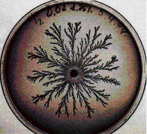

|  |
Trees and ferns often grow in fractal forms. Bacteria colonies can, too. But how?
| First, the basic problem of fractal bacteria growth |
| Here are some examples |
| Can these growth patterns be explained by an alternative to DLA? |
| Chairal growth is a variation on fractal growth. |
| Rotex growth is another variation. |
| Fractal patterns also arise with fungus. |
| Are these patterns the result of simple physical processes, or do they represent self-organization and communication on many levels? |
| Certainly, different causes can produce the same effect: the existence of fractal bacteria colonies does not favor one mechanism over another. |
| But note 3 billion years of evolution have given Nature ample opportunity to discover and exploit purely physical processes. |